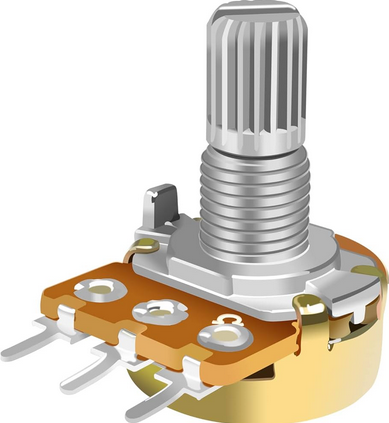
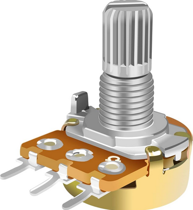

Name: Masai Franklin
Education: MSc Mechanical Engineering
Project: Development of wireless corrosion sensors
Current course: Embedded systems
Motivation: Structured learning of microcontrollers
Ever since Covid, I've worked with microcontrollers as a hobbyist.
The primary board I have used is the Arduino due to it's simplicity and versatility.
This led to the choice of my Undergrad project in automation of bench vice functionality.
The project used different electronic components such as:
 

Another notable project was the development of an Arduino-based heartbeat monitor.
This measured the heartbeat of a person and displayed it on an LCD screen.